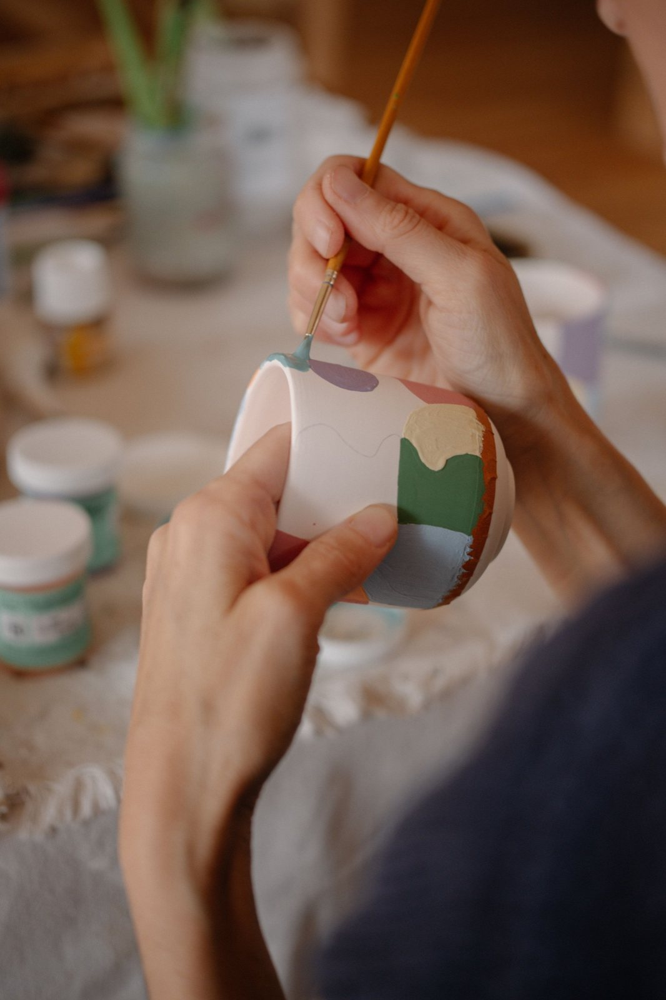

La découverte
Initiation à la céramique
2 h 30
55,00 € / personne
Pour oser un premier geste.
Découvrir le tour ou le modelage avec l’accompagnement de l’équipe.
Valable 1 an · Date choisie plus tard
Offrir une initiation →LA CARTE CADEAU · CÉRAMIQUE À BORDEAUX
Un premier geste, une nouvelle passion, un moment pour soi. Offrez une expérience à vivre dans notre atelier des Chartrons.
Dès 55 € / Valable 1 an / Date choisie plus tard

Un cadeau qui se vit. Une pièce qui reste.
Aucune expérience nécessaire pour une initiation.
Un an pour réserver une date disponible avec l’atelier.
Des ateliers en petit groupe, au cœur des Chartrons.
TROIS FAÇONS DE FAIRE PLAISIR
Pour une découverte, une immersion ou une pratique régulière : choisissez le rythme qui lui ressemble.
Les tarifs ci-dessous sont indiqués par personne.
La découverte
2 h 30
55,00 € / personne
Pour oser un premier geste.
Découvrir le tour ou le modelage avec l’accompagnement de l’équipe.
Valable 1 an · Date choisie plus tard
Offrir une initiation →L’immersion
Vendredi et samedi
180,00 € / personne
Pour s’accorder une vraie pause.
Deux journées de 10 h à 17 h pour expérimenter et approfondir.
Valable 1 an · Date choisie plus tard
Offrir un stage →Le rendez-vous
8 séances de 2 h
390,00 € / personne
Pour faire grandir une passion.
Un rendez-vous régulier le mardi, pour progresser et développer ses projets.
Valable 1 an · Date choisie plus tard
Offrir un cycle →VOTRE CADEAU EN QUELQUES CLICS
Choisissez une formule et le nombre de personnes. Le total se met à jour immédiatement.
PLUS QU’UN OBJET
Couper avec le quotidien. Sentir la terre sous ses doigts. Prendre le temps de donner forme à une idée.
Dans notre atelier de 160 m², on vient découvrir un geste, expérimenter et créer à son rythme, accompagné par l’équipe.
DU CADEAU AU PREMIER GESTE
Sélectionnez une formule et le nombre de personnes, puis finalisez votre commande.
Vous recevez votre confirmation par e-mail. Conservez la référence de commande pour organiser la venue.
Le bénéficiaire contacte l’atelier avec cette référence pour choisir un créneau disponible dans l’année.
BESOIN D’UN COUP DE MAIN ?
L’initiation : 2 h 30 pour découvrir la céramique, sans engagement sur la durée.
Le stage : deux jours, vendredi et samedi, pour expérimenter plus longuement.
Le cycle : huit séances de 2 h, le mardi, pour développer ses projets au fil des semaines.
Une question avant de choisir ? Parlons-en ensemble.
LES RÉPONSES AVANT D’OFFRIR
La carte cadeau est valable un an à compter de l’achat. La date de validité figure dans les informations de la commande après paiement.
Non. Vous choisissez la formule. Le bénéficiaire contacte ensuite l’atelier avec la référence de commande pour fixer sa venue, selon les disponibilités et pendant la période de validité.
Les initiations sont conçues pour débuter. Les stages et les cycles permettent de prendre davantage de temps et d’approfondir sa pratique, avec l’accompagnement de l’équipe.
Au tour de potier, la terre tourne sur une machine et se façonne avec les mains. En modelage, on construit sa pièce à la main, sans tour. Contactez l’atelier pour choisir l’initiation adaptée au bénéficiaire.
Un e-mail de confirmation récapitule la formule choisie et la référence de commande. Gardez cette référence : elle servira pour organiser la réservation avec l’atelier.
Oui. Ajustez la quantité pour offrir une place par personne. Pour venir ensemble, contactez l’atelier afin de trouver un même créneau avec suffisamment de places. Pour un groupe, utilisez la page Entreprises et groupes.
Dans le quartier des Chartrons, à Bordeaux. L’atelier est ouvert du mardi au samedi, de 10 h à 19 h. Les stages se déroulent vendredi et samedi. Le choix d’une date reste soumis aux créneaux disponibles.
Contactez l’équipe avant votre rendez-vous et consultez les conditions générales de vente. Un changement de date dépend des conditions de réservation et des places disponibles.
UN ANNIVERSAIRE, UNE ATTENTION, OU JUSTE L’ENVIE
Trois formules / Un an pour en profiter / Bordeaux, Les Chartrons